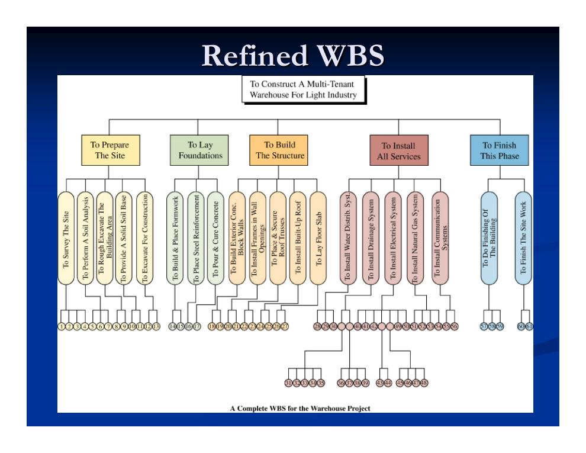
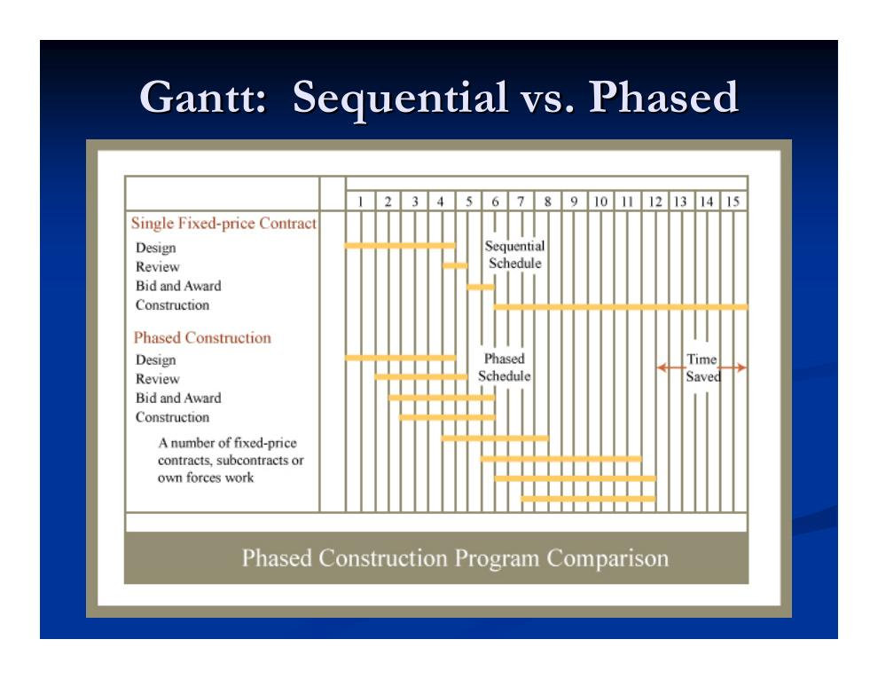
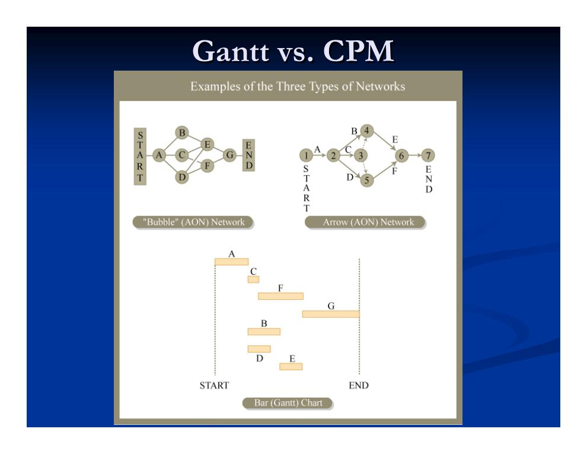
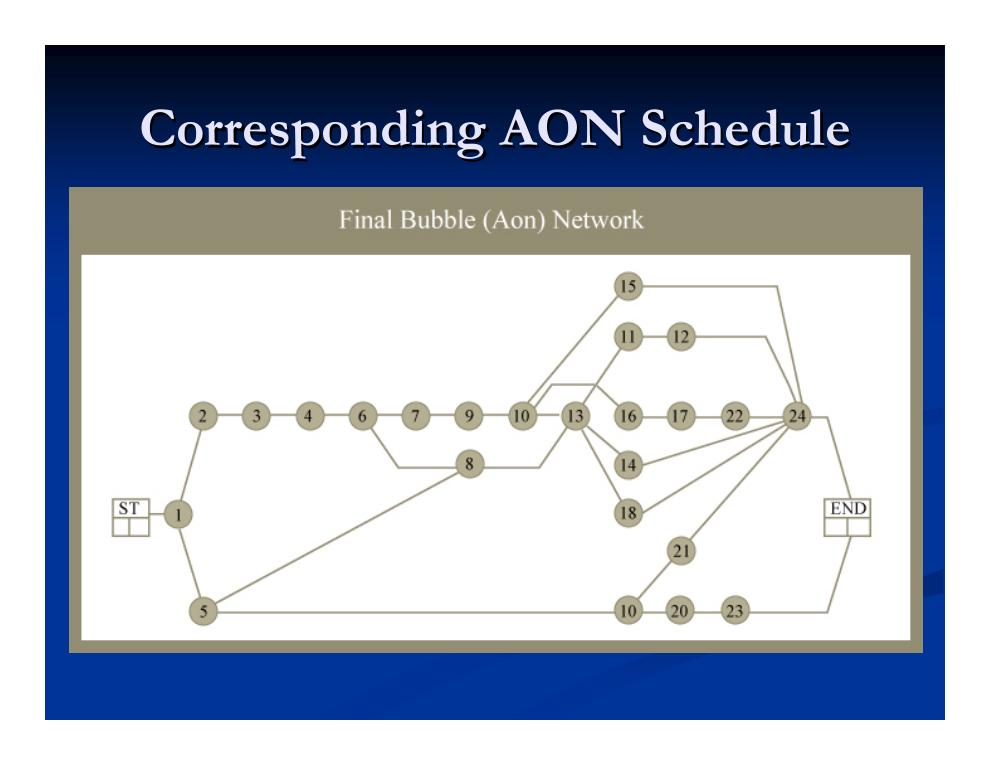
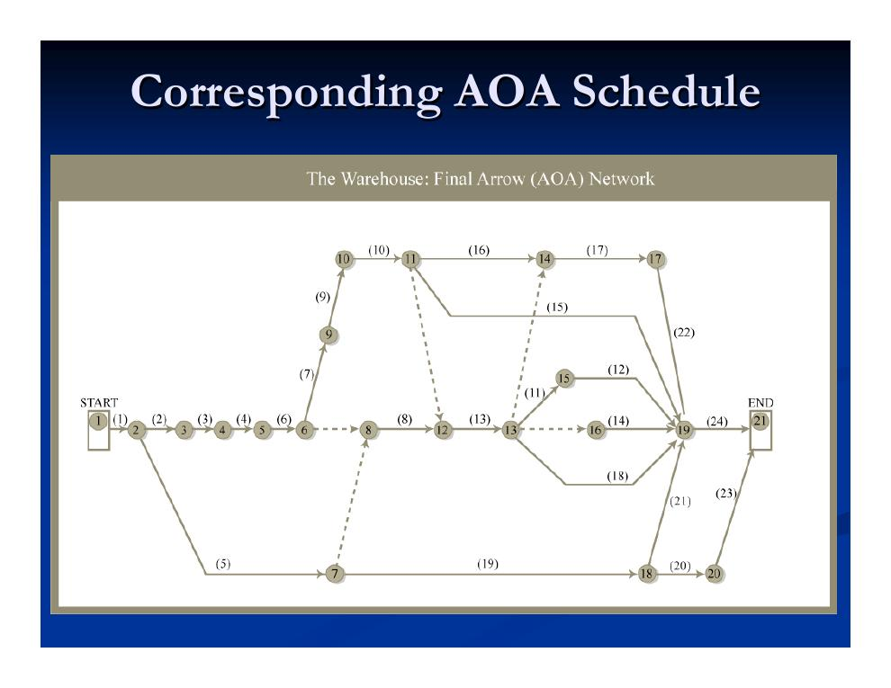
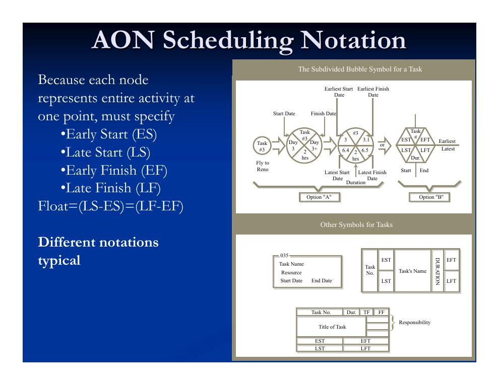
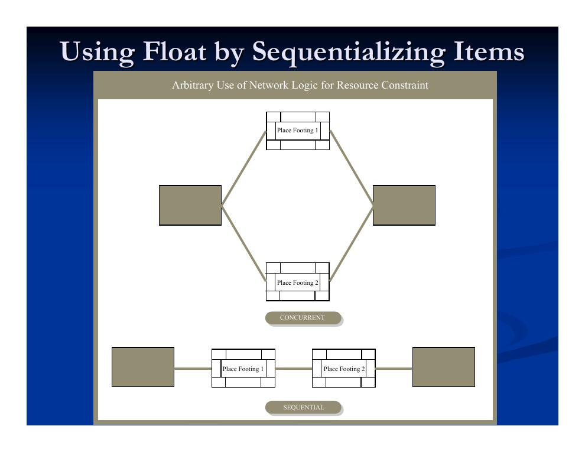

- Die Bausteine der Projektplanung: CBS, OBS und WBS
- Warum Terminplanung? Motivation und rechtliche Bedeutung
- Praktische Einflussfaktoren: Beschaffung, Genehmigungen, Ressourcen
- Gantt-Diagramme (Balkenpläne)
- Die Critical Path Method und ihre Netzplandarstellungen (AON und AOA)
- Der CPM-Algorithmus: Vorwärts- und Rückwärtsrechnung
- Pufferzeiten (Float): Gesamtpuffer, freier und unabhängiger Puffer
- Kritischer Pfad und die Frage, wem der Puffer „gehört“
Die Bausteine der Projektplanung: CBS, OBS und WBS
Bevor ein Terminplan entstehen kann, muss das Projekt in strukturierter Form beschrieben sein. Die Vorlesung fasst die Planungskomponenten in fünf Fragen zusammen: Was wird gebaut (Leistungsumfang aus Plänen und Spezifikationen), wie viel kostet es (Budget über die Kostenstruktur und die Kostenschätzung), wer führt es aus (Organisationsstruktur), wie wird die Arbeit gegliedert (Projektstrukturplan) und wann geschieht sie (Terminplan).
- Cost Breakdown Structure (CBS, Kostenstruktur)
- Die kanonische Gliederung, nach der alle Kosten des Projekts verbucht werden. Sie ordnet jeder Ausgabenart ein Konto zu und soll es erlauben, Ausgaben je Vorgang (Arbeitspaket) zu verfolgen. Häufig baut sie auf einer standardisierten, WBS-artigen Klassifikation auf – im US-Hochbau typischerweise dem CSI Masterformat mit seinen Gewerke-Divisionen (z. B. Division 2 Erdarbeiten, Division 3 Beton, Division 5 Metallbau).
- Kostencode (Cost Code)
- Der strukturierte Schlüssel eines Kontos, gespiegelt an der Kostenhierarchie. Er kombiniert üblicherweise eine Projektkennung, einen Bereichs-/Anlagencode (bei räumlich verteilten Projekten), einen Arbeitsart-Code (oft ein Standardcode wie CSI Masterformat) und einen Verteilcode für die Kostenart (Material, Gerät, Lohn, Nachunternehmer usw.).
- Organizational Breakdown Structure (OBS, Organisationsstruktur)
- Die hierarchische Darstellung der Projektorganisation: Wer ist für welche Einheit verantwortlich? In Matrixorganisationen kreuzen sich dabei Fachabteilungen (z. B. Tragwerksplanung, Maschinenbau, Elektrotechnik) mit den einzelnen Projekten.
- Work Breakdown Structure (WBS, Projektstrukturplan)
- Die hierarchische Zerlegung des Gesamtprojekts in Teilaufgaben und Arbeitspakete. Sie spielt die zentrale Rolle für Projektüberwachung und -steuerung und entsteht in Zusammenarbeit von Kalkulationsteam, Projektsteuerung und Bauleitung/Betrieb. Beschaffungsvorgänge werden häufig nicht in die WBS aufgenommen – im Terminplan müssen sie aber unbedingt erscheinen!

Ihren vollen Nutzen entfalten die Strukturen erst in Kombination: CBS + OBS ermöglicht die Budgetüberwachung einzelner Kolonnen, WBS + OBS liefert Aufgabenzuweisungen, Terminplan + OBS die Kolonneneinsatzplanung und Terminplan + CBS die laufende Kostenüberwachung.
Warum Terminplanung? Motivation und rechtliche Bedeutung
Der Kernnutzen der Terminplanung ist doppelt: Sie senkt die Wahrscheinlichkeit von Verzögerungen und hilft, sich von eingetretenen Verzögerungen zu erholen und Verantwortlichkeiten zu klären. Viele Verzögerungen entstehen schlicht aus schlechter Planung. Ein formaler Terminplan unterstützt das Durchdenken tausender Einzelvorgänge, macht Ressourcenkonflikte weit im Voraus sichtbar und ist damit notwendige – wenn auch nicht hinreichende – Voraussetzung für erfolgreiches Projektmanagement.
Der Terminplan ist im gesamten Projektverlauf allgegenwärtig: als vorläufiger Terminplan schon in der Planungsphase, zur Festlegung von Fertigstellungs- und Meilensteinterminen (Beschaffungszeiten, Präsenz der Nachunternehmer, Mieterbezug), als Kommunikationsinstrument zwischen den Beteiligten, als Rahmen für die Projektüberwachung, zur Bewertung von Änderungsauswirkungen (einschließlich des Nachweises indirekter Kosten), als Verknüpfung zu Ressourcen und Zahlungen sowie zur Erkennung von Risiken durch Überbelegung der Baustelle oder Witterung.
Terminplanung und Kostenschätzung sind eng verzahnt: Erst der Terminplan macht den Cashflow über die Zeit verständlich, und wegen des Zeitwerts des Geldes ist er entscheidend für den Barwert der Kostenschätzung. Die Mengenermittlung (Quantity Takeoff) informiert beide. Zu den praktischen Risiken gehört ein unausgewogener Einsatz – der Plan wird anfangs intensiv genutzt und später verworfen – sowie die Gefahr, dass Termininformationen nur in der Zentrale bleiben und nicht zu den ausführenden Firmen und Polieren durchdringen. Gefragt ist ein gemeinsam getragener Terminplan. Die eigene Terminplanung der Bauunternehmen ist dagegen oft sehr einfach und kurzfristig (etwa ein wöchentliches Treffen zur Planung der nächsten zwei Wochen) und darauf ausgerichtet, die Kolonnen beschäftigt zu halten – erfüllt der Rahmenterminplan das nicht, wird unter Umständen außerhalb der geplanten Reihenfolge gearbeitet.
Praktische Einflussfaktoren: Beschaffung, Genehmigungen, Ressourcen
Wichtige Faktoren, die im Terminplan berücksichtigt werden müssen:
- Prüf- und Genehmigungszeiten für technische Unterlagen (Submittals) und behördliche Genehmigungen,
- Beschaffung von Materialien und Anlagen,
- Planung für Änderungen, die erfahrungsgemäß eintreten,
- Koordination von Personal und Geräten sowie die – kritische und wegen der vielen Schnittstellen schwierige – Koordination der Nachunternehmer durch den Generalunternehmer,
- Planungs-/Entwurfstermine: Die Terminplanung der Planung selbst ist schwierig, weil Entwurfsprozesse hochgradig iterativ sind und schwer vorherzusagen ist, wann Entwurf und Kosten konvergieren.
Die Beschaffungsterminplanung ist besonders in urbanen Lagen entscheidend. Bei Sonderanfertigungen sind die Lieferzeiten unsicher, viele Parteien und Qualitätsprüfungen beteiligt. Als grobe Einteilung gilt: Schüttgüter und Massenware werden in 1–5 Tagen geliefert, standardisierte Fertigung braucht 3–12 Wochen, kundenspezifische Fertigung 10–16 Wochen. Typische Langläufer (Long-Lead Items) sind Aufzüge, Pumpen, Kessel, Kühltürme, Leittechnik, Lüftungsgeräte und Kältemaschinen, außerdem Baustahl, Bewehrung, Betonfertigteile, Sonderfassaden sowie Elektrogroßkomponenten wie Transformatoren, Motoren und Schaltanlagen.
Schließlich besteht eine wechselseitige Abhängigkeit zwischen Terminplan und Ressourcen: Der Terminplan beruht auf Vorgangsdauern, die eine bestimmte Ressourcenverfügbarkeit unterstellen – und die Ressourcenverfügbarkeit hängt ihrerseits vom Terminplan ab. Dieses hochkomplexe Problem wird in der Praxis meist iterativ gelöst; Kapitel 4.4 widmet sich ihm ausführlich.
Gantt-Diagramme (Balkenpläne)
Das Gantt-Diagramm („Balkenplan“) hat seinen Ursprung im Ersten Weltkrieg und systematisierte ältere Darstellungen. Es ist ein sehr wirksames Kommunikationsmittel und für einfachere Terminpläne äußerst beliebt, wird jedoch ab etwa 50 Vorgängen unübersichtlich. Sein entscheidender Mangel: Abhängigkeiten zwischen Vorgängen werden nicht erfasst. Es eignet sich deshalb am besten als Berichtsformat, weniger als eigentliche Planungsrepräsentation.

Die Critical Path Method und ihre Netzplandarstellungen (AON und AOA)
Die Critical Path Method (CPM, Methode des kritischen Pfades) entstand 1956 bei DuPont und wurde Anfang der 1960er-Jahre erstmals im Bauwesen angewandt. Der Begriff wird teils eng (deterministischer Netzplanalgorithmus), teils weiter gefasst. Formal ist der Netzplan ein gerichteter azyklischer Graph, der topologisch sortiert von links nach rechts gezeichnet wird: Man spezifiziert Vorgänge mit ihren Kenndaten (insbesondere Dauern) und lässt einen Planungsalgorithmus Terminempfehlungen und -restriktionen berechnen.
Das Grundvorgehen der Netzplantechnik:
- Vorgänge aus den Arbeitspaketen der WBS definieren,
- Kosten, Zeit und Ressourcen je Vorgang schätzen,
- Anordnungsbeziehungen (Abhängigkeiten) zwischen den Vorgängen festlegen,
- iterieren: CPM-Terminrechnung durchführen, Zeit-, Kosten- und Ressourcenverlauf abschätzen – ist das Ergebnis akzeptabel, fertig; wenn nicht, Abhängigkeiten anpassen oder Ressourcen erhöhen/reduzieren.
Dabei ist zu bedenken, dass Vorgangsdauern implizit von vielem abhängen: von der Arbeitsmenge, der Produktivität (Umgebung, Qualifikation, Lerneffekte, Führung …), der Zahl der eingesetzten Personen und der Geräteausstattung. Es kann sinnvoll sein, Dauern auf mehreren Wegen zu schätzen. Sofern keine Beziehungen definiert werden, gelten Vorgänge als parallel ausführbar; Anordnungsbeziehungen bilden reale Restriktionen ab – regulatorische/vertragliche, physikalische, ressourcen- und finanzierungsbedingte, sicherheitstechnische, organisatorische und umweltbezogene.

- Activity on Node (AON, Vorgangsknoten-Netzplan)
- Auch „Precedence Diagram Method“ (PDM, Vorgangsknotenmethode) oder „Bubble Diagram“ genannt: Vorgänge sitzen auf den Knoten, Pfeile stellen Abhängigkeiten dar. Parallelisierungsmöglichkeiten sind visuell leichter zu erkennen, es sind keine Scheinvorgänge nötig, und die Darstellung erlaubt reichere Beziehungstypen (Start–Start, Ende–Ende, Start–Ende, Ende–Start). In Software ist AON heute am verbreitetsten. Das Diagramm sollte früheste/späteste Start- und Endzeitpunkte (EST, LST, EFT, LFT) codieren.
- Activity on Arrow (AOA, Vorgangspfeil-Netzplan)
- Historisch am populärsten; im „Manhattan-Layout“ dem Gantt-Format sehr ähnlich. Vorgänge liegen auf den Pfeilen zwischen Ereignisknoten. Da ein Pfeil nur genau einen Anfangs- und einen Endknoten haben darf und zwischen zwei Knoten nur ein Pfeil verlaufen darf, sind Scheinvorgänge (Dummy-Pfeile) nötig – etwa wenn zwei Vorgänge gemeinsame Nachfolger, aber unterschiedliche Vorgängermengen haben.


Der CPM-Algorithmus: Vorwärts- und Rückwärtsrechnung
Der CPM-Algorithmus berechnet für jeden Vorgang bzw. jedes Ereignis die frühesten und spätesten Start- und Endzeitpunkte. Er läuft auf AON- wie AOA-Diagrammen und benötigt nur lineare Zeit O(n). Wichtig zur Interpretation: Späteste Zeitpunkte (LS, LF) sind die spätesten Termine, zu denen ein Vorgang starten bzw. enden könnte, ohne das Gesamtprojekt zu verzögern – nicht die spätesten Termine im Sinne einer durchgehenden Auslastung.
In der AON-Notation trägt jeder Knoten die vier Zeitwerte – Early Start (ES, frühester Start), Early Finish (EF, frühestes Ende), Late Start (LS, spätester Start), Late Finish (LF, spätestes Ende) – sowie die Dauer. In der Praxis existieren dafür viele unterschiedliche Symbolkonventionen:

Die Terminrechnung erfolgt in zwei Durchläufen („Pässen“):
- Vorwärtsrechnung (Forward Pass): Da alle Vorgänger abgeschlossen sein müssen, bevor ein Nachfolger beginnen kann, ist der früheste Start eines Knotens das Maximum der frühesten Endtermine seiner Vorgänger. Die Gesamtprojektdauer ergibt sich als Maximum der frühesten Endtermine aller Knoten.
- Rückwärtsrechnung (Backward Pass): Da ein Vorgang rechtzeitig fertig sein muss, damit alle Nachfolger rechtzeitig starten können, ist das späteste Ende eines Vorgangs das Minimum der spätesten Starttermine seiner Nachfolger.
Als Pseudocode für AOA-Netzpläne (Ereignisse 0…n, Dij = Dauer des Vorgangs vom Ereignis i zum Ereignis j):
Schritt 1: E(0) = 0.
Schritt 2: Für j = 1, 2, …, n: E(j) = maxi { E(i) + Dij },
wobei das Maximum über alle Vorgänge (i, j) gebildet wird, die im Ereignis j enden.
Schritt 1: L(n) = geforderter Fertigstellungstermin des Projekts (mit L(n) ≥ E(n)).
Schritt 2: Für i = n−1, n−2, …, 0: L(i) = minj { L(j) − Dij },
wobei das Minimum über alle Vorgänge (i, j) gebildet wird, die im Ereignis i beginnen.
Ein vollständig durchgerechnetes Zahlenbeispiel (Dachkonstruktion mit sieben Vorgängen) folgt zu Beginn von Kapitel 4.2.
Pufferzeiten (Float): Gesamtpuffer, freier und unabhängiger Puffer
Der Puffer (englisch Float oder Slack) misst den zeitlichen Spielraum eines Vorgangs – den Freiheitsgrad bei der Wahl seines Ausführungszeitpunkts. Anschaulich ist er die Differenz zwischen dem Zeitpunkt, zu dem der Vorgang „fertig sein muss“, und der Zeit, die er tatsächlich benötigt; die Puffervarianten unterscheiden sich darin, wie streng dieses „muss“ definiert ist. Auch wenn ein Vorgang zu vielen Zeitpunkten eingeplant werden kann, sind manche Zeitpunkte deutlich günstiger als andere.
TF = minj ( (L(j) − Dij) − E(i) )
= (spätester Start, mit dem das Projekt noch rechtzeitig endet) − (frühestmöglicher Start)
FF = minj ( (E(j) − Dij) − E(i) )
= (spätester Start, mit dem noch vor dem frühesten Start des Nachfolgers fertig ist) − (frühestmöglicher Start)
IF = max( 0, minj ( (E(j) − Dij) − L(i) ) )
wie der freie Puffer, aber unter Annahme des ungünstigsten (spätesten) eigenen Startzeitpunkts.
Dabei bezeichnet E(i) die früheste und L(i) die späteste Zeit des Anfangsereignisses, E(j) bzw. L(j) die des Endereignisses und Dij die Vorgangsdauer. Für AON-Knoten gilt kompakt: Puffer = LS − ES = LF − EF.
Kritischer Pfad und die Frage, wem der Puffer „gehört“
- Kritischer Pfad (Critical Path)
- Der längste Pfad von Vorgängen mit Gesamtpuffer null. Für den beschriebenen Algorithmus existiert mindestens ein solcher Pfad. Jeder Vorgang darauf muss pünktlich abgeschlossen werden, sonst verzögert sich das gesamte Projekt – der kritische Pfad markiert also im Wesentlichen die Mindestdauer des Projekts.
- Auch nahkritische Vorgänge (mit sehr kleinem Puffer) verdienen Aufmerksamkeit.
- Der kritische Pfad verändert sich typischerweise im Projektverlauf, wenn sich die tatsächlichen Vorgangsdauern herausstellen.
- Kritische Vorgänge bieten keinerlei Verschiebespielraum, etwa für den Ressourcenausgleich; Gegenmittel sind Zeitreserven (Contingency Buffer) und die Pufferung nach der Critical-Chain-Methode.
Puffer lässt sich auch gezielt „verbrauchen“, indem eigentlich parallele Vorgänge über zusätzliche Netzplanlogik in eine Reihenfolge gezwungen werden – etwa um mit nur einer Kolonne zwei Fundamente nacheinander statt gleichzeitig zu betonieren:

Um die Nutzung dieses Spielraums entsteht ein echter Interessenkonflikt mit erheblichen rechtlichen Folgen: Auftraggeber wollen die Auftragnehmer auf einen straffen Terminplan verpflichten, Auftragnehmer wollen Flexibilität – und gegebenenfalls Nachtragsansprüche gegen den Auftraggeber.
- Argumente der Auftragnehmerseite: Sie sieht sich für höhere Vergütung berechtigt, weil auftraggeberseitige Verzögerungen ohne ihre „Heldentaten“ viel schlimmer ausfielen; sie braucht Spielraum z. B. für den Ressourcenausgleich – Flexibilität hat Wert. Taktiken sind das bewusste Aufblähen von Dauern (Beschleunigung nur gegen Vergütung), das Einfügen künstlicher Anordnungsbeziehungen als „bevorzugte Arbeitsweise“ (Änderung nur gegen Vergütung) und damit das Erzeugen mehrerer (nah-)kritischer Pfade; Eingriffe des Auftraggebers in den Bauablauf werden abgelehnt.
- Argumente der Auftraggeberseite: Sie will Risiken senken, indem Arbeiten früh erledigt werden – zu viele späte Starts gefährden die Gesamtdauer. Sie kann versucht sein, unrealistisch kurze Termine vorzugeben, und kann die Flexibilität des Auftragnehmers vertraglich beschränken: eigene Rechte an der Puffernutzung, das Recht zur Wahl des Terminplanungsverfahrens, Widerspruchsrechte gegen „unangemessene“ Dauern, das Recht, künstliche Anordnungsbeziehungen zu streichen, und die Pflicht zur Neuberechnung des kritischen Pfades bei Verzug des Auftragnehmers.